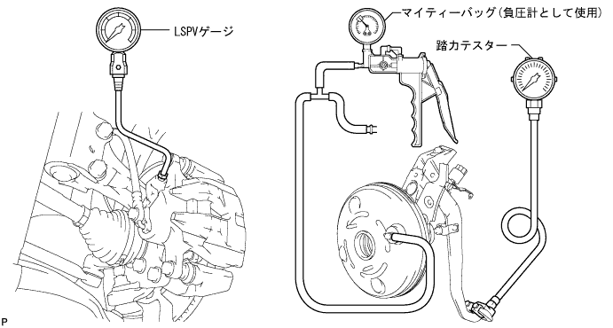
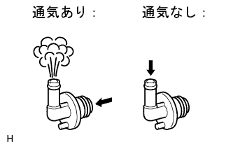

Brake Function Inspection |
| 1. Simple Inspection of Brake Booster |
Brake Booster Airtightness Inspection
Start the engine, let it idle for 1-2 minutes, then stop it.
Depress the brake pedal several times with the force used in normal braking, and check the change in brake pedal height.
Brake Booster Operation Inspection
With the engine stopped, depress the brake pedal several times with the same force, and check that the brake pedal height does not change.
Start the engine with the brake pedal depressed, and check the change in brake pedal height.
Brake Booster Airtightness Under Load Inspection
Depress the brake pedal while the engine is running, stop the engine in that condition and hold for 30 seconds, then check the change in brake pedal height.
| 2. Inspect Brake Booster Function |
Pre-inspection Preparation

Remove the bleeder plug of the front brake cylinder, and install an LSPV gauge via nipple No.3.
Bleed the air from the LSPV gauge.
Disconnect the vacuum hose from the brake booster, and install a MityVac via a 3-way union.
Install a vacuum hose of the same diameter to the other side of the 3-way union and connect it to the brake booster.
Install a pedal force gauge to the brake pedal.
Airtightness Inspection
Start the engine, stop the engine at a vacuum of 66.7kPa{500mmHg}, and check the change in vacuum.
Airtightness Under Load Inspection
Start the engine, depress the brake pedal with a pedal force of 196N{20kgf}, stop the engine at a vacuum of 66.7kPa{500mmHg}, and check the change in vacuum.
Operation Inspection Without Power Assist
With the engine stopped, operate the brake pedal several times, and check the fluid pressure at each pedal force with no vacuum.
| Pedal Force [N{kgf}] | Fluid Pressure [MPa{kgf/cm2}] |
|---|---|
| 200{20.4} | 0.5{5.1} |
| 300{30.6} | 1.1{11.2} |
Operation Inspection With Power Assist
Start the engine, set the vacuum in the brake booster to 66.7kPa{500mmHg}, and check the fluid pressure at each pedal force.
| Pedal Force [N{kgf}] | Fluid Pressure [MPa{kgf/cm2}] |
|---|---|
| 50{5.1} | 1.8 to 2.8{18.3 to 28.6} |
| 100{10.2} | 3.8 to 4.9{38.7 to 50.0} |
| 150{15.3} | 5.9 to 6.9{60.1 to 70.4} |
| 200{20.4} | 8.0 to 9.0{81.5 to 91.8} |
Remove the LSPV gauge, pedal force gauge and MityVac.
Bleed brake system (for the procedure, see)
| 3. Inspect Check Valve |
Slide the clip and disconnect the vacuum hose.
Remove the vacuum check valve from the brake booster assembly.
 |
Check that air flows from the brake booster side to the engine side, and that air does not flow from the engine side to the brake booster side.
Install the vacuum check valve to the brake booster assembly.
Connect the vacuum hose with the clip.